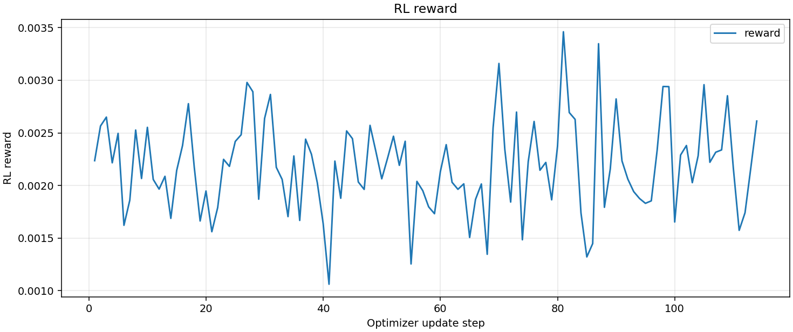
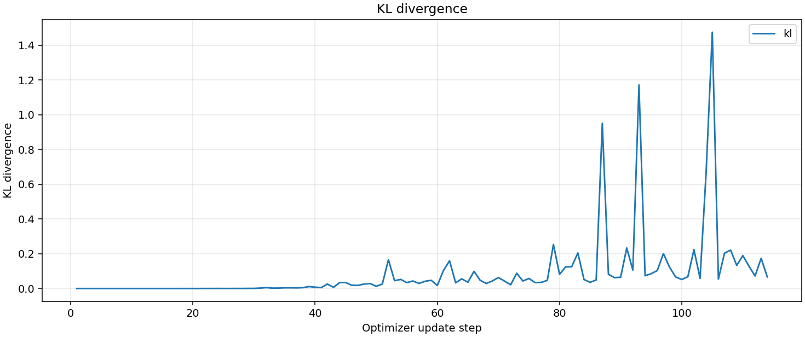
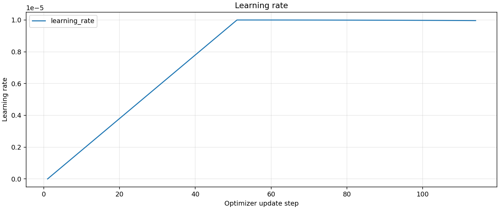
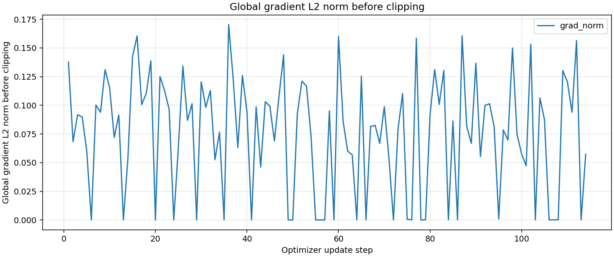
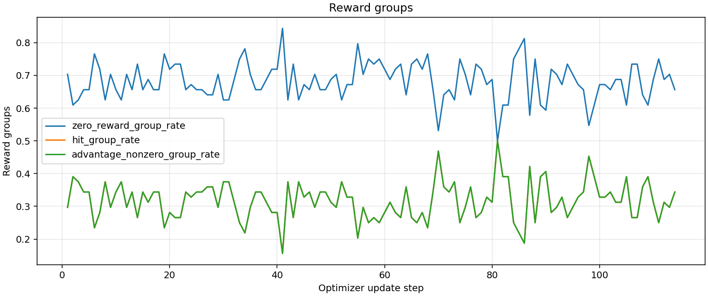
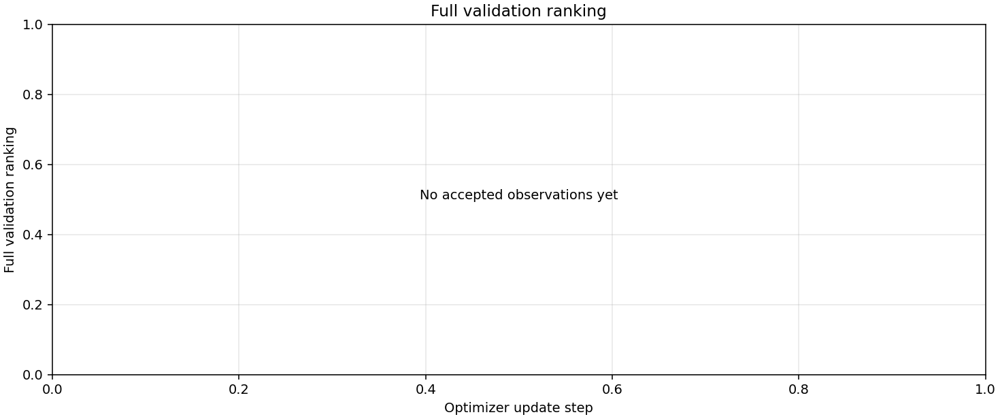

Industrial_and_Scientific RL 训练报告
训练：failed；最终测试：pending；对照：pending
运行兼容修复与对照范围
本次配置未记录已应用的梯度累积兼容修复；基线采用既有 SFT 固定导出。
此前失败尝试不作为 RL 结果，不纳入任何指标比较。
runtime_compatibility: not recorded
训练 PDF · 验证 PDF · 训练 JSON · 验证 JSON · 对照 JSON · 对照 CSV · 对照 HTML
RL 使用 reward、KL、梯度与验证排名监控；优化目标不等同 teacher-forced SFT loss。缺失指标不表示0。
| 指标 | 观测数 | 均值 | 最近值 |
|---|
| advantage_nonzero_group_rate | 114 | 0.317297 | 0.34375 |
| eval_ndcg10 | 0 | — | — |
| eval_recall10 | 0 | — | — |
| grad_norm | 114 | 0.0755482 | 0.0573581 |
| hit_group_rate | 114 | 0.317297 | 0.34375 |
| kl | 114 | 0.0863296 | 0.0663528 |
| learning_rate | 114 | 7.75595e-06 | 9.96179e-06 |
| reward | 114 | 0.00218317 | 0.0026128 |
| rewards/ndcg_rule_reward | 114 | -0.0176479 | -0.0188716 |
| rewards/rule_reward | 114 | 0.0198311 | 0.0214844 |
| task/description2sid/reward | 112 | 0.000360298 | 0 |
| task/description2sid/zero_reward_group_rate | 112 | 0.918569 | 1 |
| task/sid_sequence_recommendation/reward | 114 | 0.00195248 | 0.00252277 |
| task/sid_sequence_recommendation/zero_reward_group_rate | 114 | 0.712537 | 0.692708 |
| task/title2sid/reward | 114 | 0.00473213 | 0.00404309 |
| task/title2sid/zero_reward_group_rate | 114 | 0.325494 | 0.25 |
| task/title_history_to_sid/reward | 114 | 0.00237455 | 0.00193607 |
| task/title_history_to_sid/zero_reward_group_rate | 114 | 0.664347 | 0.722222 |
| zero_reward_group_rate | 114 | 0.682703 | 0.65625 |
RL reward

KL divergence

Learning rate

Global gradient L2 norm before clipping

Reward groups

Full validation ranking

SFT / RL 完整测试对照
状态：pending；测试指标用于最终报告。推荐仅依据完整验证集 NDCG@10。
{'status': 'pending', 'recommended_model': None, 'test_used_for_selection': False}HR 等同单目标 Recall；行为冷按训练商品 ID 判定。冷样本以实际行数与命中数解读；缺失值显示 —。
| 分组 | 样本 | K | SFT Recall | RL Recall | 差值 pp | SFT NDCG | RL NDCG | 差值 pp | SFT 命中 | RL 命中 |
|---|
| overall | 4533 | 1 | 4.85330% | — | — | 4.85330% | — | — | 220 | — |
| overall | 4533 | 3 | 7.54467% | — | — | 6.38962% | — | — | 342 | — |
| overall | 4533 | 5 | 9.41981% | — | — | 7.16433% | — | — | 427 | — |
| overall | 4533 | 10 | 12.94948% | — | — | 8.30009% | — | — | 587 | — |
| overall | 4533 | 20 | 16.47915% | — | — | 9.19019% | — | — | 747 | — |
| overall | 4533 | 50 | 22.10457% | — | — | 10.30845% | — | — | 1002 | — |
| behavior_warm | 4386 | 1 | 5.01596% | — | — | 5.01596% | — | — | 220 | — |
| behavior_warm | 4386 | 3 | 7.79754% | — | — | 6.60377% | — | — | 342 | — |
| behavior_warm | 4386 | 5 | 9.73552% | — | — | 7.40444% | — | — | 427 | — |
| behavior_warm | 4386 | 10 | 13.38349% | — | — | 8.57827% | — | — | 587 | — |
| behavior_warm | 4386 | 20 | 17.03146% | — | — | 9.49821% | — | — | 747 | — |
| behavior_warm | 4386 | 50 | 22.82262% | — | — | 10.64974% | — | — | 1001 | — |
| behavior_cold | 147 | 1 | 0.00000% | — | — | 0.00000% | — | — | 0 | — |
| behavior_cold | 147 | 3 | 0.00000% | — | — | 0.00000% | — | — | 0 | — |
| behavior_cold | 147 | 5 | 0.00000% | — | — | 0.00000% | — | — | 0 | — |
| behavior_cold | 147 | 10 | 0.00000% | — | — | 0.00000% | — | — | 0 | — |
| behavior_cold | 147 | 20 | 0.00000% | — | — | 0.00000% | — | — | 0 | — |
| behavior_cold | 147 | 50 | 0.68027% | — | — | 0.12537% | — | — | 1 | — |
| repeat_last | 122 | 1 | 68.03279% | — | — | 68.03279% | — | — | 83 | — |
| repeat_last | 122 | 3 | 81.96721% | — | — | 76.50247% | — | — | 100 | — |
| repeat_last | 122 | 5 | 85.24590% | — | — | 77.91453% | — | — | 104 | — |
| repeat_last | 122 | 10 | 91.80328% | — | — | 79.94066% | — | — | 112 | — |
| repeat_last | 122 | 20 | 94.26230% | — | — | 80.56365% | — | — | 115 | — |
| repeat_last | 122 | 50 | 95.08197% | — | — | 80.72346% | — | — | 116 | — |
| not_repeat_last | 4411 | 1 | 3.10587% | — | — | 3.10587% | — | — | 137 | — |
| not_repeat_last | 4411 | 3 | 5.48628% | — | — | 4.45043% | — | — | 242 | — |
| not_repeat_last | 4411 | 5 | 7.32260% | — | — | 5.20751% | — | — | 323 | — |
| not_repeat_last | 4411 | 10 | 10.76853% | — | — | 6.31864% | — | — | 475 | — |
| not_repeat_last | 4411 | 20 | 14.32782% | — | — | 7.21614% | — | — | 632 | — |
| not_repeat_last | 4411 | 50 | 20.08615% | — | — | 8.36090% | — | — | 886 | — |
| collision_free | 4216 | 1 | 2.06357% | — | — | 2.06357% | — | — | 87 | — |
| collision_free | 4216 | 3 | 4.03226% | — | — | 3.17524% | — | — | 170 | — |
| collision_free | 4216 | 5 | 5.76376% | — | — | 3.89081% | — | — | 243 | — |
| collision_free | 4216 | 10 | 8.91841% | — | — | 4.90376% | — | — | 376 | — |
| collision_free | 4216 | 20 | 12.16793% | — | — | 5.72274% | — | — | 513 | — |
| collision_free | 4216 | 50 | 17.64706% | — | — | 6.81191% | — | — | 744 | — |
| collision_affected | 317 | 1 | 41.95584% | — | — | 41.95584% | — | — | 133 | — |
| collision_affected | 317 | 3 | 54.25868% | — | — | 49.13982% | — | — | 172 | — |
| collision_affected | 317 | 5 | 58.04416% | — | — | 50.70102% | — | — | 184 | — |
| collision_affected | 317 | 10 | 66.56151% | — | — | 53.47011% | — | — | 211 | — |
| collision_affected | 317 | 20 | 73.81703% | — | — | 55.30627% | — | — | 234 | — |
| collision_affected | 317 | 50 | 81.38801% | — | — | 56.81135% | — | — | 258 | — |
| behavior_cold_collision_free | 147 | 1 | 0.00000% | — | — | 0.00000% | — | — | 0 | — |
| behavior_cold_collision_free | 147 | 3 | 0.00000% | — | — | 0.00000% | — | — | 0 | — |
| behavior_cold_collision_free | 147 | 5 | 0.00000% | — | — | 0.00000% | — | — | 0 | — |
| behavior_cold_collision_free | 147 | 10 | 0.00000% | — | — | 0.00000% | — | — | 0 | — |
| behavior_cold_collision_free | 147 | 20 | 0.00000% | — | — | 0.00000% | — | — | 0 | — |
| behavior_cold_collision_free | 147 | 50 | 0.68027% | — | — | 0.12537% | — | — | 1 | — |
| behavior_cold_collision_affected | 0 | 1 | — | — | — | — | — | — | 0 | — |
| behavior_cold_collision_affected | 0 | 3 | — | — | — | — | — | — | 0 | — |
| behavior_cold_collision_affected | 0 | 5 | — | — | — | — | — | — | 0 | — |
| behavior_cold_collision_affected | 0 | 10 | — | — | — | — | — | — | 0 | — |
| behavior_cold_collision_affected | 0 | 20 | — | — | — | — | — | — | 0 | — |
| behavior_cold_collision_affected | 0 | 50 | — | — | — | — | — | — | 0 | — |